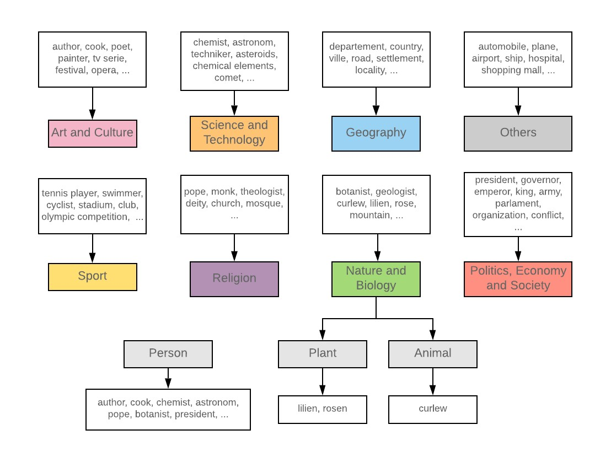

Street map data was taken from OpenStreetMap, a map wiki where volunteers collect information on all streets around the world. Using that information, we created a dataset including all streets in our countries of interest as of 18 April 2019, using the ample storage space provided by CASA. It includes the respective street names, the postal codes and communities through which the streets lead, and the precise geometry of the route taken by the street.
6 countries in Western Europe are represented in the analysis: Austria, Belgium, France, Germany, Italy and Switzerland. They were selected based on the richness of data and the expertise of our excellent resident polyglot.
Additionally, 8 cities of these 6 countries were analysed: Bern, Bruges, Brussels, Milan, Paris, Rome and Vienna. They were selected based on the richness of data and gaps in current empirical research.
Based on a preliminary analysis of results returned for France from the Wikipedia API, we defined 8 broad themes: Arts & Culture, Geography, Nature & Biology, Politics Economy & Society, Religion, Science & Technology, Sports and Others. Additional categories were identified where applicable: the subject of the street name (a person, animal, or plant), and the relevant time-period, starting from 1600 to present (2020).
To summarise the literature, hexagonal tile maps have a good balance between fitting the earth's spherical surface, preserving local centroid distances, and accurately showing relative global position across geographical scales.
We drew on the excellent H3 package developed by the superb folks over at Uber Engineering. The radius and aperture of the hexagons were varied to represent the Western European regional scale, and the national scale for our selected countries. Streets are counted within each hexagonal bin if their centroids are within the cell.
Dealing with coastal cities was challenging because the H3 package located the centroid of the hexagons containing these cities being out at sea. As a result, the hexagons were not included. To resolve this issue, we added a buffer to the GeoJSON boundaries that we used. The buffer distance was determined by the length of a hexagon edge, depending on the resolution specified. At the regional scale with hexagon resolution = 4, the hexagon edge length and hence the buffer distance was approximately 22km. At the country scale, the hexagon resolution = 6, and the edge length and buffer distance was approximately 3km. Italy was the exception because of its shape; we used a buffer of 12km to include its coastal cities.
You can read more in the following articles by McNeill and Hale (2017) and Brodsky (2018).
Please refer to our API documentation here.
Map data may contain errors such as spelling mistakes, incorrectly labelled streets or missing streets. Any historical changes in street names were also unable to be reflected in our analysis. Additionally, in the Wikipedia API, the Wikipedia pages returned from street names depended on the keywords sent, and results were imperfect. User discretion is thus advised!
Nevertheless, our results provide a broad representation of toponymics in Western Europe which may aid future qualitative analysis, including archival research.